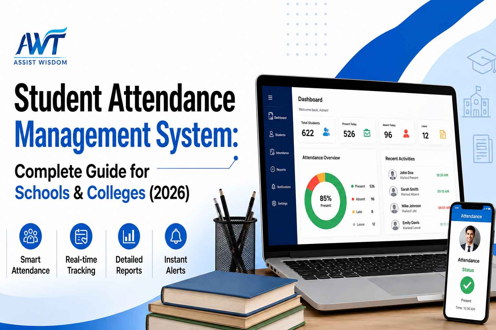

27 July 2026
Student Attendance Management System: Complete Guide for Schools & Colleges (2026)
Student attendance plays a crucial role in the smooth functioning of every educational institution. However, managing attendance manually through paper registers or spreadsheets can be time-consuming, error-prone, and difficult to maintain as the number of students increases.
A Student Attendance Management System simplifies this process by digitally recording attendance, generating instant reports, and providing real-time access to attendance records. It helps teachers save time, enables administrators to monitor attendance efficiently, and keeps parents informed about their child's attendance status.
Whether you manage a school, college, university, coaching institute, or training centre, implementing a digital attendance management system improves operational efficiency and supports better academic administration.
What is a Student Attendance Management System?
A Student Attendance Management System is a software solution that automates the process of recording, monitoring, and managing student attendance. Instead of maintaining physical attendance registers, teachers can mark attendance digitally using a computer, tablet, or mobile device.
Modern attendance systems can also integrate with technologies such as:
- RFID Card Attendance
- Biometric Attendance
- Face Recognition Attendance
- QR Code Attendance
- Mobile App Attendance
- Education ERP Software
The attendance data is stored securely in a centralised database, allowing authorised users to access records anytime and from anywhere.
Why is Student Attendance Management Important?
Student attendance is more than just tracking presence in the classroom. It helps institutions monitor student participation, improve academic performance, maintain discipline, and meet compliance requirements.
A digital attendance management system helps institutions:
- Reduce manual paperwork
- Save teachers' valuable time
- Improve attendance accuracy
- Monitor absenteeism
- Generate reports instantly
- Improve communication with parents
- Maintain organised student records
- Support informed decision-making
As educational institutions continue to adopt digital technologies, attendance automation has become an essential part of modern campus management.
Manual Attendance vs Student Attendance Management System
| Feature | Manual Attendance | Student Attendance Management System |
|---|---|---|
| Attendance Recording | Paper Register | Digital & Automated |
| Time Required | 10–20 Minutes | 1–3 Minutes |
| Accuracy | Prone to Human Errors | Highly Accurate |
| Report Generation | Manual | Instant Reports |
| Parent Notifications | Not Available | Real-Time Alerts |
| Data Storage | Physical Registers | Secure Cloud Storage |
| Attendance Analytics | Not Available | Available |
| Paperwork | High | Minimal |
| Accessibility | Campus Only | Anytime, Anywhere |
Common Challenges of Manual Attendance
Many educational institutions still rely on traditional attendance registers, which create several operational challenges.
Some common issues include:
- Time-consuming attendance marking
- Human errors while recording attendance
- Missing or damaged attendance registers
- Difficulty generating monthly reports
- Delayed communication with parents
- Difficulty tracking attendance trends
- Increased administrative workload
- Lack of centralised attendance records
These challenges become even more significant as the institution grows and manages multiple classes, departments, or campuses.
Key Features of a Student Attendance Management System
A modern Student Attendance Management System offers several powerful features that help institutions automate attendance while improving efficiency.
1. Digital Attendance Recording
Teachers can record attendance digitally using desktops, laptops, tablets, or smartphones. This significantly reduces the time required to complete attendance.
2. Real-Time Attendance Tracking
Attendance is updated instantly, allowing administrators and authorised staff to monitor attendance in real time.
3. Mobile App Access
Teachers, students, and parents can access attendance records through secure mobile applications from anywhere.
4. RFID & Biometric Integration
The system supports integration with RFID cards and biometric devices for automatic attendance recording, reducing manual effort and improving accuracy.
5. Face Recognition Attendance
Advanced attendance systems support AI-powered face recognition technology for fast, contactless, and secure attendance marking.
6. QR Code Attendance
Institutions can also implement QR code-based attendance, making the attendance process faster and more convenient for students and faculty.
7. Parent Notifications
Automatic SMS, email, or mobile app notifications can be sent to parents whenever a student is absent or arrives late, improving parent engagement and communication.
8. Cloud-Based Data Storage
Attendance records are stored securely in the cloud, ensuring data safety, regular backups, and easy access whenever required.
Student Attendance Methods Comparison
| Attendance Method | Best For | Key Advantage |
|---|---|---|
| Manual Attendance | Small Institutions | Low Initial Cost |
| RFID Attendance | Schools & Colleges | Fast Entry |
| Biometric Attendance | Colleges & Universities | Prevents Proxy Attendance |
| QR Code Attendance | Coaching Institutes | Easy to Use |
| Face Recognition | Smart Campuses | Contactless Attendance |
| Mobile App Attendance | Hybrid Learning | Remote Attendance Support |
Attendance Reports & Analytics
One of the biggest advantages of a Student Attendance Management System is its ability to generate detailed attendance reports instantly. Instead of manually calculating attendance percentages, institutions can access accurate reports with just a few clicks.
Administrators and faculty can generate reports based on:
- Daily Attendance Report
- Weekly Attendance Report
- Monthly Attendance Report
- Student-Wise Attendance Report
- Class-Wise Attendance Report
- Subject-Wise Attendance Report
- Department-Wise Attendance Report
- Semester-Wise Attendance Report
- Attendance Percentage Report
- Defaulter Student Report
- Late Arrival Report
These reports help institutions monitor attendance trends, identify irregular attendance, and make informed academic decisions.
Attendance Reports Available
| Report Type | Purpose |
|---|---|
| Daily Attendance Report | Monitor daily student attendance |
| Monthly Attendance Report | Analyse monthly attendance trends |
| Student-Wise Report | View the attendance history of individual students |
| Class-Wise Report | Compare attendance across different classes |
| Subject-Wise Report | Track attendance for each subject |
| Semester-Wise Report | Monitor attendance during each semester |
| Attendance Percentage Report | Calculate eligibility based on attendance |
| Defaulter Report | Identify students with low attendance |
| Late Arrival Report | Track students arriving late |
Benefits of a Student Attendance Management System
Implementing a Student Attendance Management System offers significant advantages for educational institutions of all sizes.
Saves Valuable Time
Teachers can complete attendance in just a few minutes, allowing them to focus more on teaching and student engagement instead of administrative tasks.
Improves Accuracy
Digital attendance minimises manual errors and ensures reliable attendance records throughout the academic year.
Reduces Paperwork
By replacing paper registers with digital records, institutions reduce paperwork, save storage space, and simplify record management.
Enhances Parent Communication
Parents receive timely notifications about student absences or late arrivals, enabling them to stay informed and take the necessary action.
Supports Better Decision-Making
Attendance analytics help administrators identify attendance patterns, monitor absenteeism, and support students who may require additional attention.
Provides Secure Data Management
Cloud-based storage with role-based access ensures attendance data remains secure and accessible only to authorised users.
Simplifies Compliance and Record Keeping
Educational institutions can maintain organised attendance records for audits, inspections, and accreditation requirements.
Key Features and Benefits at a Glance
| Feature | Benefit |
|---|---|
| Digital Attendance | Faster attendance recording |
| Mobile App | Anytime, anywhere access |
| RFID & Biometric Integration | Automated attendance process |
| Face Recognition | Contactless attendance |
| Parent Notifications | Improved parent communication |
| Attendance Reports | Instant report generation |
| Attendance Analytics | Better academic insights |
| Cloud Storage | Secure and centralised data |
| Role-Based Access | Enhanced security |
| ERP Integration | Unified campus management |
Who Can Use a Student Attendance Management System?
A Student Attendance Management System is designed to meet the needs of various educational institutions.
| Institution Type | Suitable |
|---|---|
| Schools | ✔ |
| CBSE Schools | ✔ |
| ICSE Schools | ✔ |
| State Board Schools | ✔ |
| Colleges | ✔ |
| Universities | ✔ |
| Autonomous Colleges | ✔ |
| Engineering Colleges | ✔ |
| Pharmacy Colleges | ✔ |
| Nursing Colleges | ✔ |
| Medical Colleges | ✔ |
| Coaching Institutes | ✔ |
| Training Centres | ✔ |
How Does a Student Attendance Management System Work?
The attendance process is simple and efficient.
Step 1: Student Identification
Students are identified through manual attendance, RFID cards, biometric devices, QR codes, or face recognition technology.
Step 2: Attendance Recording
Attendance is recorded instantly and stored securely in the system.
Step 3: Data Synchronisation
The attendance data is automatically synchronised with the central database.
Step 4: Parent Notifications
If configured, the system sends instant notifications to parents whenever a student is absent or arrives late.
Step 5: Report Generation
Teachers and administrators can generate attendance reports at any time based on their requirements.
Student Attendance Management System Integrated with Education ERP
When integrated with a comprehensive Education ERP, attendance management becomes part of a unified campus management solution. This eliminates duplicate data entry and improves administrative efficiency.
The attendance system can integrate with:
- Student Information System (SIS)
- Admission Management
- Fee Management
- Examination Management
- Timetable Management
- Library Management
- Hostel Management
- Transport Management
- HRMS & Payroll
- Parent Portal
- Student Portal
- Mobile Application
With ERP integration, institutions can manage academic and administrative processes from a single platform.
Future of Student Attendance Management
Educational institutions are increasingly adopting smart technologies to modernise attendance tracking.
Some of the latest trends include:
- AI-powered attendance monitoring
- Face Recognition Technology
- Cloud-Based Attendance Management
- Mobile Attendance Applications
- Contactless Attendance Systems
- Real-Time Attendance Analytics
- Smart Dashboards for Administrators
These innovations improve efficiency, enhance security, and support the digital transformation of educational institutions.
Why Choose ABuzz WebTech?
ABuzz WebTech is a trusted provider of Education ERP Software and digital campus management solutions for schools, colleges, universities, and autonomous institutions.
Why Educational Institutions Trust ABuzz WebTech
| ABuzz WebTech Advantage | Value for Your Institution |
|---|---|
| 20+ Years of Industry Experience | Trusted Education Technology Partner |
| Complete Education ERP | One Platform for Campus Management |
| Cloud-Based Solution | Secure, Reliable & Scalable |
| Mobile-Friendly Platform | Access Anytime, Anywhere |
| RFID & Biometric Integration | Automated Attendance Management |
| Parent & Student Portals | Better Communication & Transparency |
| Easy Implementation | Quick Deployment with Minimal Disruption |
| Dedicated Support Team | Training, Implementation & Ongoing Assistance |
| Customisable Modules | Tailored to Institutional Requirements |
Our Student Attendance Management Solution Includes
- Digital Attendance Management
- RFID Attendance Integration
- Biometric Attendance Integration
- Face Recognition Attendance
- QR Code Attendance
- Mobile Attendance App
- Attendance Analytics Dashboard
- Parent Notification System
- Student Portal
- Teacher Portal
- Education ERP Integration
- Cloud-Based Data Management
Whether you manage a school, college, university, or coaching institute, ABuzz WebTech provides a secure, scalable, and easy-to-use attendance management solution that helps improve efficiency and reduce administrative workload.
Ready to Digitise Student Attendance?
Transform the way your institution manages attendance with ABuzz WebTech's Student Attendance Management System. Our solution is designed to simplify attendance tracking, improve communication, and support smarter campus management.
Request a Free Demo today and discover how our Education ERP can help your institution streamline attendance management and enhance operational efficiency.
Frequently Asked Questions (FAQs)
1. Can a Student Attendance Management System support multiple campuses?
Yes. A centralised attendance system allows institutions with multiple campuses to manage and monitor attendance from a single dashboard.
2. Can attendance rules be customised for different courses or departments?
Yes. Attendance criteria can be configured based on departments, programmes, semesters, subjects, or institutional policies.
3. Is the attendance system suitable for both offline and online classes?
Yes. Modern attendance management systems support classroom, online, and hybrid learning environments.
4. How does a digital attendance system help during audits and accreditation?
It provides organised, searchable, and downloadable attendance records that simplify documentation for inspections, audits, and accreditation processes.
5. Can guest faculty or visiting lecturers record attendance?
Yes. Role-based access allows institutions to grant attendance permissions to guest faculty while maintaining data security.